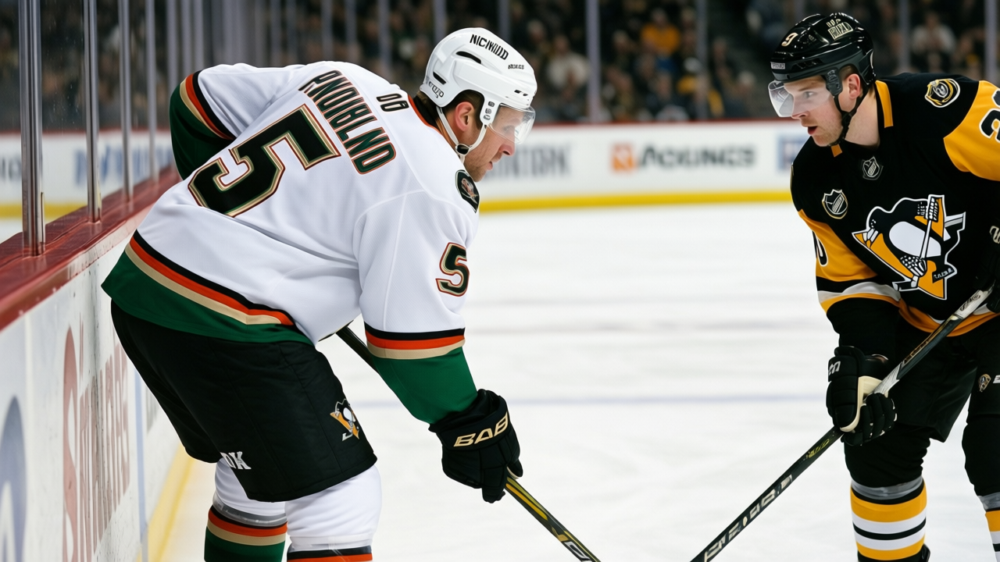

Morning Skate Notes: line shuffles in Anaheim
Havelid and Krog into the lineup, Lydman and Kwiatkowski out, Smirnov up to the second line. The Ducks won 3-2 in OT in Pittsburgh.
 Ray CallumSenior correspondent · Home Ice Network
Ray CallumSenior correspondent · Home Ice Network
 Mighty Ducks of Anaheim put
Mighty Ducks of Anaheim put  Niclas Havelid77 on the top pair and Jason Krog69 on the third line, and dropped Tuomas Lydman74 and
Niclas Havelid77 on the top pair and Jason Krog69 on the third line, and dropped Tuomas Lydman74 and  Joel Kwiatkowski67 from the dress list. The Ducks won 3-2 in overtime at
Joel Kwiatkowski67 from the dress list. The Ducks won 3-2 in overtime at  Pittsburgh Penguins on Tuesday.
Pittsburgh Penguins on Tuesday.
The shakeup is deeper than the dress list suggests. Havelid, who was not in uniform before this week, now carries the top pair, the first kill, and the first power play unit. That displaces  Ruslan Salei76 from the first unit; he drops to the second pair and picks up a fifth power play slot. Krog comes in on the third line at left wing, a spot Lydman vacates.
Ruslan Salei76 from the first unit; he drops to the second pair and picks up a fifth power play slot. Krog comes in on the third line at left wing, a spot Lydman vacates.
Lydman had been a second-line left winger on the second power play unit and the first kill before the change. He does not dress. Kwiatkowski, who carried the third pair right side and the second kill, is also out of the lineup.
The center shift is quieter.  Erik Cole79 takes the first kill, up from the second. Alexei Smirnov71 steps from the third line to the second line and the second power play unit, a promotion that puts a faster skater in front of
Erik Cole79 takes the first kill, up from the second. Alexei Smirnov71 steps from the third line to the second line and the second power play unit, a promotion that puts a faster skater in front of  Jean-Sebastien Giguere97 on the odd man.
Jean-Sebastien Giguere97 on the odd man.
Giguere talked about this exact dynamic last week. "The coach, he makes a change and the guys, they respond. They, they want to show him," he told The Tunnel's Jan Kowalczyk after the 3-2 win at Chicago.
The road record is 4-12. The overtime win in Pittsburgh is the fourth road victory in 16 road games.
| Player | Before | After |
|---|---|---|
| Havelid | not dressed | top pair, K1, PP1 |
| Krog | not dressed | 3rd line LW |
| Lydman | 2nd line LW, PP2, K1 | not dressed |
| Kwiatkowski | 3rd pair RD, K2 | not dressed |
| Smirnov | 3rd line LW | 2nd line LW, PP2 |
| Salei | top pair RD, PP2 | 2nd pair LD, H5 |